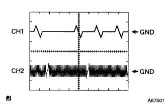

DTC P0340/12 カムポジションセンサ系統 |
| DTC No. | DTC検出条件
| 点検部位 |
| P0340/12 |
|
|
参照| 手順1 | エンジンコントロールコンピユータ単体点検 |
 |
TaSCANをエンジンコントロールコンピユータのコネクタA26(G2 +)←→A34(NE-)端子間に接続する。(端子配列は参照)
|  |
TaSCANをオシロスコープ機能にセットする。[セット方法については、TaSCAN取扱説明書を参照]
| 項目 | 内容 |
| 測定端子 | CH1:G2+←→NE- CH2:NE+←→NE- |
| 計器セット | 2V/DIV、20ms/DIV |
| 条件 | アイドル回転時 |
|
| ||||
| OK | |
| 手順2 | カムポジション センサ単体点検 |
参照)
|
| ||||
| OK | |
| 手順3 | ワイヤハーネスまたはコネクター点検（エンジンコントロールコンピユータ-カムポジシヨンセンサ） |
エンジンコントロールコンピユータのコネクタAおよびカムポジションセンサのコネクタを切り離す。
 |
トヨタエレクトリカルテスターを使用して、エンジンコントロールコンピユータの車両側コネクタ←→カムポジションセンサの車両側コネクタ間の導通および短絡を点検する。(端子配列は参照)
| 測定端子(端子名) エンジンコントロールコンピユータ←→カムポジションセンサ | 基準 |
| A26(G2+)←→1(G2) | 導通があり他の端子間およびボデーアース間と短絡がないこと |
| A34(NE-)←→2(G-) | 導通があり他の端子間およびボデーアース間と短絡がないこと |
|
| ||||
| OK | |
| 手順4 | センサ取り付け部点検 |
カムポジションセンサのボルトの締め付け、取り付け状態を点検する。
|
| ||||
| OK | |
| 手順5 | カムシャフト単体点検 |
カムシヤフトの凹凸部および取り付け状態を点検する。
|
| ||||
| OK | ||
| ||